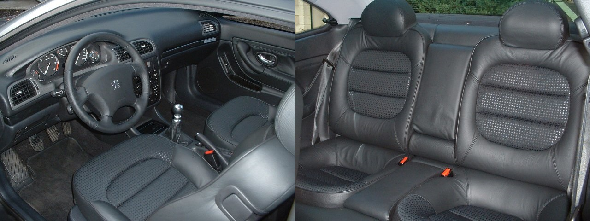
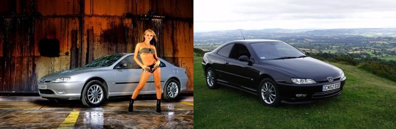

Klasyczne 406 Coupé. Czy jest warte uwagi?

Zdjęcie. 1. Peugeot 406 Coupé po ostatnim liftingu (źródło fr.wikipedia.org).
W 1997 roku Pininfarina zaczęła produkcje jednego z najpiękniejszych coupé lat 90 które było w
zasięgu finansowym sporej grupy zjadaczy chleba. Dokładnie 107 631. Peugeot 406 Coupé, który jak
na francuskie auto przystało był produkowany we Włoszech i tylko tam aż do końca produkcji w 2004.

Zdjęcie. 2. Piękne auto plus Peugeot przed liftingiem (źródło własne).
Dizajn jako najmocniejsza najładniejsza strona

Zdjęcie. 3. Emblemat wewnątrz, wnętrze po liftingu (źródło własne).
Pininfarina na szczęście była również odpowiedzialna za projekt nadwozia. O czym zresztą informują nas emblematy znajdujące się na
zewnątrz i wewnątrz pojazdu.
W czasach produkcji francuskiego Ferrari jak go określiła prasa.
Czekaj! Francuskiego? Ale produkowanego we Włoszech,
czyli francuskiego Ferrari z Włoch.
Prasa po za dobrą robotą dziennikarską zarzucała zbytnie podobieństwo z wcześniej wymienioną marką, która również korzystała z tożsamego biura projektowego.
Więc z jednej strony można twierdzić, że po prostu taki był dizajn w danych czasach a z drugiej, że istniejący
projekt został dostosowany dla innego zamawiającego.
Jak było? Nie wiem, choć się domyślam.

Zdjęcie. 4. Ferrari 550 ta mordka jakaś znana? (źródło fr.wikipedia.org).
Spojrzenie na poprzednika - 504 Coupé
Może rozjaśni temat? Peugeot 504 Coupé do którego wcześniejszy akapit
również można zastosować.

Zdjęcie. 5. Peugeot 504 Coupé seria 2 (źródło fr.wikipedia.org).
Porównanie "ojca i syna" wskazuję na pokrewieństwo i podważa znacznie dawne zarzuty.
Nawiązań jest sporo jak choćby przód auta czy linia nadwozia. Tylko nie tylne lampy! Te przed
liftingiem to gdzieś już widziałem. Cóż niektórzy uważają że tworzenie to sztuka plagiatu.
Poza tym nawet gama silnikowa jest zbliżona (pomijając diesla).

Zdjęcie. 6. Peugeot 504 Coupé seria 1 (źródło fr.wikipedia.org).
Szyby w kolorze!

Zdjęcie. 7. Wnętrze w kolorze morelowym (źródło fr.wikipedia.org).
Szkło szyb i lusterek zależnie od koloru lakieru miało ten sam odcień... jeśli kolor był niebieski, zielony lub srebrny.
Tak w przypadku innego koloru był któryś z tej puli.
Wykończenie wnętrza
Kolory wnętrza były zbliżone do koloru wykończenia siedzeń. Przy bananowych morelowych skórach mieliśmy żółtą podsufitkę. Skóra na
kierownicy i obiciu "boczków" drzwi była zgodna z wykończeniem siedzeń.
Skórzane fotele zawsze występowały przy V6 - wersja wyposażenia SE/Pack.
Z czego rodzajów skóry było sporo od gładkiej poprzez perforowaną, marszczoną a kończąc na "pół-skórze". Aczkolwiek 70% produkcji stanowiły
inne wersje silnikowe a przy tym wyposażenia i głównie welur (podstawowa wersja wyposażenia S).

Zdjęcie. 8. Wykończenia wnętrza (źródło 406coupeclub.org).
Wersje limitowane
Wersje specjalne i limitowane różniły się wykończeniem wnętrza. Otrzymywały inne emblematy (prócz Griffe). Jak i zależnie od edycji w obszycie
skórą wnętrze. A z zewnątrz inne felgi lub w innym kolorze.
-
Black & Silver lub Sport na bazie "podstawy" wersja nielimitowana. Różnica to dwukolorowe felgi, inne wnętrze.
Kolor auta tylko czarny lub srebrny. Powstało 2 598 sztuk.

Zdjęcie. 9. Wnętrze Black, Silver, Sport (źródło coupe406.com).

Zdjęcie. 10. Silver&Black (źródło 406coupeclub.org).
-
Settant'anni - wyłącznie najmocniejszy silnik V6. Jedyna opcja posiadania białej skóry! Ewentualnie kasztanowa (dostępna standardowo). Elementy wnętrza drewniane,
pokryte skórą. 1 305 sztuk.

Zdjęcie. 11. Limitowana wersja Settant'anni (źródło fr.wikipedia.org).
-
Griffe - najrzadsza choć nielimitowana wersja. Całe 885 sztuk wyprodukowano. Dostępna w trzech kolorach lakieru (dwa szare i czarny). Wyróżnia
się tylko połączeniem czarnej skóry, szyberdachu i bogatego wyposażenia.

Zdjęcie. 12. Wersja Griffe (źródło benzin.fr).
-
Ultima Edizione - ostateczna wersja na koniec produkcji. W teorii limitowana bo oficjalnie powstało 2097 sztuk lecz typowo "po włosku"
występują egzemplarze z wyższymi numerami.
Posiada najwięcej elementów pokrytych skórą i bogate wyposażenie.

Zdjęcie. 13. Limitowana wersja Ultima (źródło fr.wikipedia.org).

Zdjęcie. 14. Emblemat wersji Ultima Edizione (źródło fr.wikipedia.org).
Napęd i osiągi

Zdjęcie. 15. Silnik 3l V6 207KM, wersja z końca produkcji (źródło fr.wikipedia.org).
Do napędu niezależnie od rocznika mieliśmy do wyboru cztery cylindry w rzędzie albo sześć w układzie widlastym (tylko 3.0 zwane również 2.9). W pierwszych latach produkcji
były dostępne jednostki benzynowe o pojemności 2 i 3 litrów. Następnie w 2001 dołączył diesel o pojemności 2.2 który był
pierwszym seryjnym silnikiem wyposażonym w filtr DPF (cudowna rzecz) w aucie osobowym! Rok później do oferty dodano silnik benzynowy również o pojemności 2.2.
Każdy silnik oprócz dwóch ostatnich można było zamówić z klasycznym automatem.
| Pojemność | Model | KM/Nm | 0-100 km/h (s) | Vmax (km/h) | Lata produkcji |
| 2.0 | XU10J4R | 132/180 | 10,4; 14,1 (AT) | 205; 200 (AT) | 1997-1999 |
| 2.0 | EW10J4 | 135-136/190 | 10,4; 12,3 (AT) | 208; 201 (AT) | 1999-2004 |
| 2.2 | EW12J4 | 158/217 | 9,2 | 218 | 2002-2004 |
| 3.0 | ES9J4 | 190/267 | 7,9; 9,6 (AT) | 235; 230 (AT) | 1997-2000 |
| 3.0 | ES9J4S | 207/285 | 7,7; 9,5 (AT) | 240; 232 (AT) | 2000-2004 |
| 2.2 HDi | DW12TED4HX | 133/317 | 10,9 | 201-208 | 2001-2004 |
Przez okres produkcji jednostki nie przechodziły radykalnych zmian. W 2001 roku dwulitrowa EW10J4 dostała inny wtrysk co pozwoliło uzyskać 1KM więcej.
Trzylitrowa V6 przy współpracy z Porsche na rok 2000 otrzymała zmienne fazy rozrządu na wałku dolotowym co zwiększyło moc (S przy modelu jak ssanie) i
niezauważalnie poprawiło osiągi.
Wszystkie silniki wolnossące nie są łatwe do podnoszenia mocy. Inaczej ma się sprawa z dieslem który za drobną opłatą w autoryzowanym serwisie
miał podnoszoną moc w okolice 155KM i plus 40NM bez utraty gwarancji. Ponoć niektórym na seryjnych gratach udaję się uzyskać ~180KM, aczkolwiek mogą być to
wskazania tylko z "dupohamowni".
Liftingi i modernizacje w okresie produkcji
Przez okres produkcji wykonano dwa liftingi. Pierwszy w latach 1999-2000 gdzie zostało zmienione wnętrze czyli
kierownica i kokpit (zachowując kształt). Przy tym najważniejsza zmiana była niewidoczna. Całe auto przeszło ze sterowania
analogowego na cyfrowe (szyna CAN). Przez to
sporo części (głównie elektrycznych) z "przed lifta" model D8 nie pasuję do "po lifta" model D9.
Zmiana ta zapewniła bezawaryjność i brak problemów z elektryką.
Pod koniec życia w 2003 nastąpił ostatni lifting. Mający upodobnić wygląd auta do reszty gamy modelowej i nadchodzącej 407
z którą 406 Coupé zazębiała produkcję. Zmiany były kosmetyczne:
przedni zderzak, kolory i felgi.
Należy pamiętać że przez okres produkcji samochód był poprawiany i unowocześniany. Na początku produkcji przednie kierunkowskazy
były pomarańczowe
a zawieszenie jak w "zwykłej" 406 (<1998 rokiem).
Rok 1999-2000 to okres przejściowy więc spotkamy tam znane nam choćby z Poloneza "przejściówki" czyli stary silnik, nowe wnętrze itd.
Stabilizacja nastąpiła od 2000 roku. W 2001 zawitał system kontroli
trakcji i stabilizacji toru jazdy (ASR i ESP), niedostępny dla 2.0. Większości dat zmian nie ma jasno określonych.

Zdjęcie. 16. Wnętrze D8 (materiały producenta).

Zdjęcie. 17. Wnętrze D9 (materiały producenta).
406 kontra 406

Zdjęcie. 7. 406 i 406 (źródło własne).
Dizajn 406 Coupé był całkowicie różny od odmian sedan czy kombi. Żaden element nadwozia nie pasuję od "zwykłej" wersji.
Za to pod spodem i we wnętrzu jest diametralnie inaczej. Wtedy jest to po prostu inna odmiana auta klasy średniej. Dodatkowo coupé było największe czy tam
najdłuższe. Wszak to tylko inne nadwozie ale te które musi wyglądać ładnie. Dlatego z salonu zawsze wyjeżdżało się na alufelgach!
Zawieszenie za to jest bardziej sportowo autostradowo zestrojone. Jak i ma większy rozstaw tylnej osi. Silniki choć te same to przy odmianie dwudrzwiowej startują od dwóch litrów.
W przypadku wersji V6 lub HDi z przodu mamy czterotłoczkowe zaciski Brembo czego nie było poza coupé jak i seryjna rozpórka przednich kielichów ale
tylko i wyłącznie przy silnikach widlastych.
Cena najdroższego
Cena 406 Coupé 3.0 w automacie pod koniec 1997 roku na rok modelowy 1998 wynosiła 160 tys. zł, a w przypadku sedana 112. Nawet luksusowy 605 przy tej
samej konfiguracji był tańszy z ceną 149 tys. Bazowa wersja 2.0 zaczynała się od 107 dla coupé i 83 (wersja wyposażenia SV) dla sedana.
Był to najdroższy Peugeot w ofercie. Co wskazuję w jakich klientów celowano. Gdzie za prestiż posiadania pięknego
coupé zamiast sedana należało dopłacić od 28 do 44%.
Konkurencyjny Mercedes CLK320 był wyceniony na 194 tys. Czyli 21% drożej od topowej V6 a od bazowej 2 litrówki CLK200 aż 32% drożej. Jak widać za bardziej pasujący
do klasy auta tylni napęd i bardziej prestiżową markę należało dopłacić aż trzy Maluchy (STD - 12,7 tys).
Planowana produkcja na 80 tys. została spora przekroczona. Co świadczy o sukcesie rynkowym.
Cechy szczególne
Jako że na ten moment temu autu bliżej do youngtimera niż codziennego gruza. Należy pamiętać przy zakupie wymarzonej i jedynej takiej. Roczniki
1997 mają pomarańczowe boczne kierunki ale często były wymieniane na przezroczyste, tożsame z innymi Peugeotami przez to tanie. Zderzak przód jak na pierwszym zdjęciu pojawił się pod koniec produkcji.
Lusterka są zawsze w czarnym metaliku a część progu, dokładki zderzaka przód i listwa drzwi w pięknym czarnym kolorze plastiku. Aczkolwiek podobnie jak z "kierunkami" częste było przemalowywanie na jednolity kolor.
Możliwe że po kolizji i wyklucza jedyny taki oryginał. Ale nie ma pewności.
Choć to tylko średnia półka miała odrobinę maggii. Szyby lusterka w paru kolorach regulowane zawieszenie tył, nawigacja, pilot, telefon, edycje limitowane...
Awaryjność jednostek nie należy do wysokich. są znane z dziesiątek innych "francuzów" tego okresu. "Fałka jak nie cieknie tzn. że nie działa"